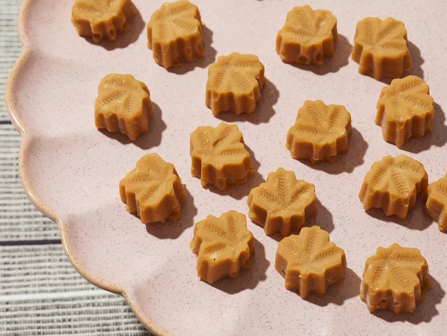

Candy

Description
This maple sugar candy is made with only maple syrup and is pure and creamy. It's a melt-in-your-mouth treat, almost like fudge! Add anything you want, like chopped nuts. Use small maple leaf molds or other pretty shapes.
You'll find a detailed ingredient list and step-by-step instructions in the recipe below:
Ingredients
- 2 cups pure maple syrup
- ½ cup chopped walnuts
Steps
- Attach a candy thermometer to a large, heavy-bottomed saucepan. Bring maple syrup to a boil in the saucepan over medium-high heat, stirring occasionally, until syrup reaches 235 degrees F (110 degrees C).
- Remove from heat and cool to 175 degrees F (80 degrees C) without stirring, about 10 minutes.
- Stir mixture rapidly with a wooden spoon until thick, creamy, and lighter in color, about 5 minutes. Stir in chopped nuts.
- Pour into molds; allow to cool at room temperature until set.
- Unmold candy. Store in an airtight container for up to 1 month.
- Eat!